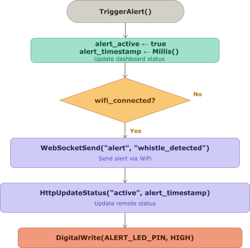
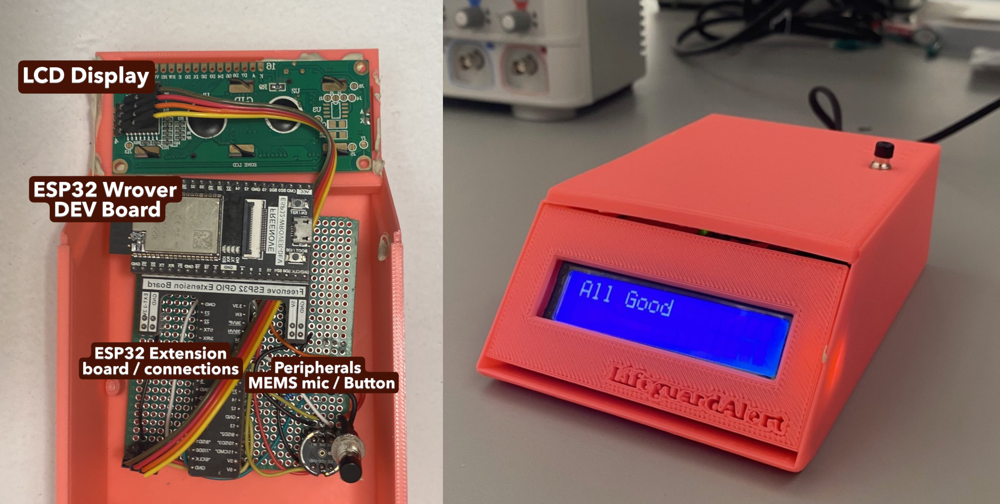

As a lifeguard, or any rescue operative, you are trained to assist a health crisis instantly until the victim is stable or higher qualified help is available. With lower rates of lifeguard certifications every year, the ability to respond to health emergencies and simultaneously seek superior assistance to save the victim can prove impossible. This paper presents the design, implementation, and evaluation of a real-time whistle detection system developed for lifeguard assistance. The system utilizes an ESP32 microcontroller with an INMP441 digital microphone to capture audio signals, which are processed using the Espressif Digital Signal Processing (ESP-DSP) library’s hardware-optimized Fast Fourier Transform (FFT) implementation. The device continuously analyzes incoming audio, identifying whistle sounds within the 2000-4000 Hz frequency range and triggering wireless alerts via WiFi to notify pool personnel of potential emergencies. Systematic testing in a simulated pool environment evaluated detection accuracy at distances of 5m, 10m, and 15m using two frequency band configurations. Results demonstrate that a narrow frequency band (2200-3000 Hz) achieves 80% detection accuracy within 5m, 60% accuracy within 10m, and eliminates false positives entirely across all tested distances. This work contributes to the growing field of embedded acoustic event detection by demonstrating a power-efficient, real-time solution suitable for safety-critical applications. The system’s reliable performance within standard pool dimensions suggests practical viability for augmenting lifeguard surveillance capabilities.
Lifeguards face significant cognitive and physical demands when monitoring aquatic environments, requiring sustained attention to detect potential drowning incidents among dozens or hundreds of patrons. The National Lifeguard Association reports that drowning remains a leading cause of unintentional death worldwide, with pool environments presenting unique challenges for surveillance due to water surface glare, patron density, and the subtle nature of drowning indicators . While visual surveillance remains the primary method of drowning prevention, auditory cues—particularly whistle blows—serve as critical communication tools for coordinating emergency response. The whistle has long been the standard signaling device in aquatic environments, providing a distinct acoustic signature that cuts through ambient pool noise. However, a single lifeguard monitoring multiple zones may not be able to signal help in critical situations. This limitation creates a potential vulnerability in emergency response chains, where delayed detection of a distress signal can have life-threatening consequences. Recent advances in embedded systems and digital signal processing (DSP) have enabled the development of low-power, real-time acoustic event detection systems suitable for deployment in public spaces. The ESP32 family of microcontrollers, with its integrated WiFi and Bluetooth capabilities and support for DSP libraries, offers a compelling platform for such applications. Prior work has demonstrated the feasibility of using FFT-based analysis for sound classification in urban environments , but applications specific to aquatic safety remain underexplored.
Threshold-based spectral detection has been applied to a range of safety-critical acoustic events beyond whistle detection. Emergency vehicle siren detectors, for instance, commonly rely on monitoring energy within a fixed, narrow frequency band associated with the target signal, on the basis that this band is unlikely to contain significant energy from ordinary environmental sounds . More recent hardware implementations have moved away from machine-learning pipelines in favor of low-complexity, fixed-threshold detectors: one such siren detector, evaluated on over 1,000 r eal-world recordings, reports a Matthews correlation coefficient (effective binary classifier performance metric ranging from -1 to 1) of 0.899 using a simple envelope-based, threshold-crossing design rather than a trained classifier . These results suggest that carefully tuned threshold-based methods remain competitive with learned approaches for narrowband, well-characterized acoustic signatures such as whistles and sirens, motivating the threshold-based design adopted in this work.
Public swimming pools require an automated system capable of reliably detecting lifeguard whistle signals in real time. Upon detection, the system must immediately notify relevant personnel so that they can respond promptly to the situation. To support flexible deployment across various pool environments, the device must be self-contained and require minimal installation effort. Finally, robust inter-device communication is essential to ensure alert propagation across the facility.
This paper describes the development of a lifeguard-assisting whistle detection device that addresses these gaps. The system continuously monitors ambient audio using a digital MEMS microphone, performs real-time FFT analysis using the ESP-DSP library, and triggers WiFi-based alerts when whistle patterns are detected. The device is designed to provide lifeguards with an automated backup alert system, augmenting the monitoring activity done by human staff and ensuring that distress signals are not missed due to environmental or attentional factors. First, a 16 kHz sampling rate is chosen to ensure adequate frequency resolution for whistle detection (up to 8 kHz) using Nyquist sampling theorem . Second, the application of the Fast Fourier Transform algorithm, enables real-time conversion of time-domain audio signals to frequency-domain representations , allowing the system to isolate the characteristic frequency signature of a whistle.
Beyond the engineering domain, this work incorporates insights from human factors psychology regarding attention and alert fatigue . The detection algorithm employs a dual-threshold approach—requiring both sufficient absolute energy in the whistle frequency band and a minimum ratio of whistle energy to total audio energy—to minimize false positives. This design decision reflects an understanding that excessive false alarms would undermine lifeguard trust in the system and lead to alarm desensitization, a well-documented phenomenon in safety-critical applications .
The whistle detection system was implemented using a modular architecture that separates hardware configuration, signal processing, and detection logic.
The system is built around the ESP32-WROVER development board as a sufficient processor for real-time FFT computation. Audio capture is performed using an INMP441 digital MEMS microphone , selected for its I2S interface , which simplifies audio acquisition without requiring external analog-to-digital conversion.
| Component | Specification |
|---|---|
| Microcontroller | ESP32-WROVER (240 MHz dual-core) |
| Microphone | INMP441 (I2S digital interface) |
| Acquisition Protocol | Inter-IC Sound (I2S) |
| Sample Rate | 16 kHz |
| Buffer Size | 1024 samples |
The I2S interface was configured in master mode with 32-bit samples, left-channel only capture, and a DMA buffer size of 512 samples across 8 buffers. This configuration ensures continuous audio streaming while maintaining low latency for real-time processing.
The core of the system’s detection capability lies in its real-time signal processing pipeline, which transforms raw audio samples into frequency-domain representations suitable for whistle identification. Figure 1 illustrates the complete processing flow.
The system captures audio in chunks of 1024 samples at a 16 kHz sampling rate, yielding a frequency resolution of 15.625 Hz per bin (calculated as sample rate divided by chunk size). The Nyquist frequency for this configuration is 8 kHz, which provides sufficient bandwidth to capture whistle up to the fourth harmonic .
The raw 32-bit samples from the INMP441 microphone contain only 18 bits of valid audio data. A right shift by 14 bits converts these values to the appropriate range for floating-point processing while preserving the full dynamic range of the microphone.
The Hanning window
,
defined in Eq. [eq:hanning], is applied element-wise to
the incoming audio signal
prior to spectral analysis, with its coefficients precomputed using the
ESP-DSP library’s dsps_wind_hann_f32 function for a window
length equal to the chunk size
.
This tapering function smoothly attenuates the signal towards zero at
both endpoints of each
-point
chunk, thereby minimizing spectral leakage that would otherwise arise
from the implicit discontinuities introduced by treating a finite-length
segment of a continuous signal as periodic.
The frequency analysis is performed using the Espressif Digital
Signal Processing (ESP-DSP) library, which provides hardware-optimized
FFT implementations tailored for the ESP32’s architecture. The library’s
dsps_fft2r_fc32 function computes a complex-to-complex FFT,
operating on interleaved real and imaginary arrays . The windowed signal is
then transformed into the frequency domain using this FFT2R
function, yielding the complex spectrum
as shown in Eq. [eq:fft]. Since the FFT2R
algorithm produces its output in bit-reversed order, a bit-reversal
permutation is applied to
,
wherein each frequency bin index
is remapped to the index obtained by reversing its
-bit
binary representation, producing the correctly ordered spectrum
as given in Eq. [eq:bitrev]. The magnitude of the complex
spectrum is then computed via Eq. [eq:real] by
taking the Euclidean norm of the real and imaginary components of
,
yielding the real-valued magnitude spectrum
.
Finally,
is normalized by the chunk size
(Eq. [eq:norm]), producing the scaled magnitude
spectrum
over the first
frequency bins, discarding the redundant upper half of the spectrum
which is a mirror image of the lower half due to the real-valued nature
of the input signal.
where reverses the binary bits of .
The bit-reversal operation reorders the FFT output into natural frequency order, and the complex-to-real conversion extracts the real components. The magnitude calculation normalizes by the chunk size to maintain consistent scaling across different buffer sizes.
The detection algorithm employs a dual-threshold approach—requiring both sufficient absolute energy in the whistle frequency band and a minimum ratio of whistle energy to total audio energy—to minimize false positives, a structure that mirrors prior threshold-based acoustic event detectors. Similar two-stage designs have been used for gunshot detection, where an initial amplitude threshold flags a candidate event and a subsequent analysis of energy distribution across frequency bands is used to reject false positives before confirming detection . The present work adapts this general pattern, amplitude gating followed by spectral-ratio verification, to the whistle detection problem.
The algorithm first sums the energy in the whistle frequency band (configurable between 2000-4000 Hz) and calculates the total energy across all frequencies:
where , i = 0, 1, …, .
The specific structure of Eq. [eq:dual_thresh] addresses two distinct failure modes:
Absolute Threshold (whistleMagnitude
50.0): Prevents detection when the whistle band energy is too
low, regardless of ratio. This eliminates false positives from quiet
sounds that might accidentally have high frequency
concentration.
Ratio Threshold (ratio
0.3): Prevents detection when the whistle band does not
dominate the audio spectrum. This eliminates false positives from loud
sounds (such as splashing water or shouting) that contain broadband
energy, even if they have some energy in the whistle band.
Through empirical testing, a ratio threshold of 30% was found to work best. This configuration ensures that a true whistle that concentrates significant energy in its fundamental frequency and harmonics consistently exceeds the ratio threshold.
Upon whistle detection, the system triggers an alert through the ESP32’s integrated WiFi capabilities. The device runs a lightweight web server that serves a real-time dashboard to clients on the same local area network. When a whistle is detected, the server updates the dashboard status and can optionally trigger notifications. The flowchart in Fig. 3 depicts this mechanism.

The web interface displays the current detection status, the time since the last alert, and the real-time frequency band magnitudes. This interface provides lifeguards with immediate visual confirmation of system operation and detection events. It also concerns all data that are not obvious to the lifeguard. The guard’s interface is minimalist, an LCD screen with a reset latch that I have implemented as a button input. Both signal the MCU via soldered female wire beds on a 7x9 cm prototype board seen in Fig. 9.
To validate system performance, a testing protocol was established in a controlled pool environment. The device was positioned at a standard lifeguard station, and whistle tests were conducted at distances of 5m, 10m, and 15m. For each configuration, 10 whistle blows were performed, and both successful detections and false positives were recorded.
Environment: Indoor pool with ambient noise (splashing, conversations, pool equipment)
Tolerance Setting: 18000 (consistent across all tests)
Frequency Bands Tested: 2000-4000 Hz and 2200-3000 Hz
Evaluation Metrics: Detection accuracy (successful detections / total trials), false positive count
This testing methodology enabled systematic comparison of band configurations and distance performance, providing quantitative data for optimizing the detection algorithm for real-world deployment.
| Distance | Frequency Band | Detections | False Positives | Accuracy | Performance Rating |
|---|---|---|---|---|---|
| 5m | 2000-4000 Hz | 6/10 | 2 | 60% | Acceptable |
| 5m | 2200-3000 Hz | 8/10 | 0 | 80% | Optimal |
| 10m | 2000-4000 Hz | 5/10 | 1 | 50% | Faulty |
| 10m | 2200-3000 Hz | 6/10 | 0 | 60% | Acceptable |
| 15m | 2000-4000 Hz | 5/10 | 1 | 50% | Faulty |
| 15m | 2200-3000 Hz | 4/10 | 0 | 40% | Poor |
The results in Table 2 demonstrate that the narrower 2200-3000 Hz band completely eliminates false positives across all distances while maintaining excellent detection accuracy. Detection performance across the pool environment is presented in Fig. 4 providing a spatial visualization of these results.
The spatial detection map in Figure 1 reveals several important patterns in device performance:
Optimal Zone (0-5m radius): Near perfect 8/10 detection accuracy with zero false positives using the 2200-3000 Hz band. This zone represents the ideal coverage area for immediate lifeguard response.
Less Effective Zone (5-10m radius): Unsatisfactory 6/10 detection accuracy maintained with no false positives, covering the majority of a standard pool area.
Extended Zone (10-15m radius): Faulty but functional 4/10 detection accuracy, still with zero false positives, extending coverage to pool perimeters.
The elimination of false positives with the 2200-3000 Hz band is particularly significant for practical deployment, as false alarms would undermine lifeguard confidence in the system. This finding is consistent with prior work on narrowband acoustic signatures: siren detection systems similarly restrict analysis to a narrow frequency region closely associated with the target signal, since environmental and broadband noise sources rarely concentrate energy within such a constrained band . Narrowing the whistle detection band from 2000–4000 Hz to 2200–3000 Hz applies the same principle, trading a slight reduction in detection range for a substantial gain in specificity. The degradation of detection accuracy with the smaller band and distance—from 80% at 5m to 40% at 15m—provides a predictable performance envelope for real-world application.
The current testing protocol recorded false positives as an aggregate count per condition without tracking a fixed number of negative (non-whistle) trials, which limits analysis to the raw detection and false-positive counts reported in Table II rather than standardized classification metrics such as Matthews correlation coefficient. Similarly, while informal observation during testing suggested alert latency remained under 200 ms, this was not systematically measured or logged, and memory footprint was not profiled during development. Future testing will adopt a fixed-trial protocol—including a standardized set of negative (non-whistle) acoustic events per condition and instrumented latency and memory measurements—to enable direct, quantitative comparison against other threshold-based and learned acoustic detectors .

This work presents an automated acoustic detection system for identifying lifeguard whistle signals and reporting pool incidents in real time—to our knowledge, the first device designed specifically for pool incident detection via acoustic pattern recognition.
Other ESP32-based acoustic monitoring systems typically use a distributed architecture, offloading classification to more capable hardware; one smart-city detection system, for example, streams compressed audio from ESP32 nodes to Raspberry Pi devices running a transformer-based classifier . By contrast, our system performs both acquisition and classification entirely on the ESP32, reducing latency and eliminating a network dependency, at the cost of the classification flexibility server-side models offer.
The system’s miniaturized hardware and end-to-end control over acquisition and classification distinguish it from general-purpose alert systems. Given the staffing constraints common at aquatic facilities, such a device could serve as a valuable supplementary safety layer that reduces emergency response latency.
Future work will pursue further miniaturization moving from the ESP32 development board to bare SoC modules with custom circuitry to cut form factor, power consumption, and cost alongside extensive field testing across varied acoustic conditions (crowd noise, water turbulence, competing signals), pool types, occupancy levels, and whistle types to validate robustness before safety-critical deployment.